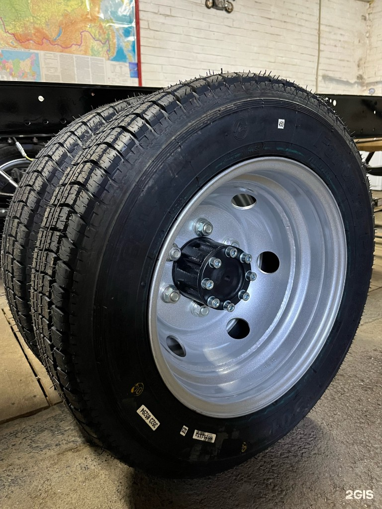
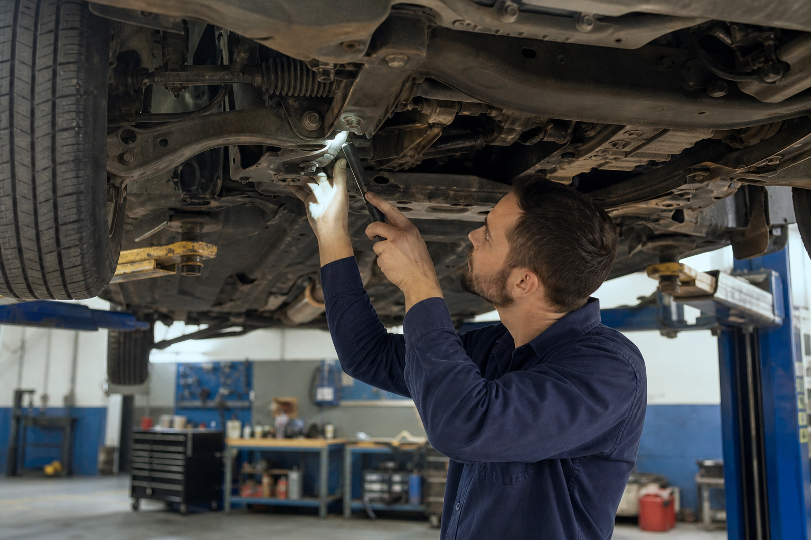
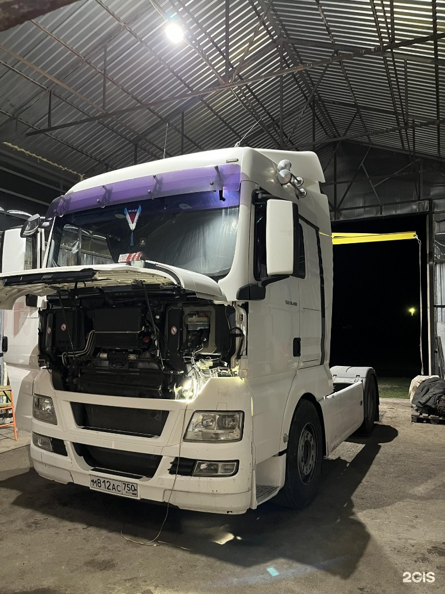

01 — TIRES
Шиномонтаж и ремонт шин
Сезонная переобувка, ремонт порезов, правка и прокатка дисков. Грузовой и выездной шиномонтаж, продажа автошин б/у, мойка шин.
Шиномонтаж, ремонт ходовой и грузовых автомобилей, замена масла — работаем с легковым и коммерческим транспортом. Круглосуточно, на трассе между Саратовом и Камышином.

Сезонная переобувка, ремонт порезов, правка и прокатка дисков. Грузовой и выездной шиномонтаж, продажа автошин б/у, мойка шин.

Ремонт ходовой части автомобиля, замена амортизаторов и стоек, диагностика подвески — легковые и коммерческие авто.

Ремонт грузовых автомобилей и автобусов — КамАЗ, ГАЗ, MAN, Volvo, Mercedes-Benz и другие марки. Аппаратная замена масла.
Чистая зона ожидания, кофе и домашняя атмосфера — многие клиенты заезжают к нам на трассе между Саратовом и Камышином.
Опишите проблему по телефону или в WhatsApp — подскажем, что делать, и сориентируем по срокам.
Осмотр и компьютерная диагностика — находим причину, согласовываем объём и стоимость работ.
Ремонтируем на месте или с выездом. Запчасти — в наличии или оперативно подберём и закупим.
Проверяем результат вместе с вами и отправляем в путь — с гарантией на выполненные работы.
рп. Каменский, ул. Советская, 26 — на трассе, удобно заехать при поломке в пути. Маршрут в 2ГИС.


АВТОСЕРВИС КАМЕНСКИЙ
рп. Каменский, ул. Советская, 26
Круглосуточно · расчёт по картам